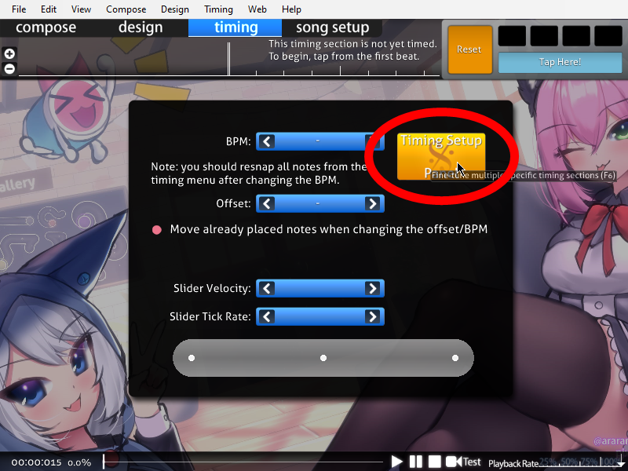
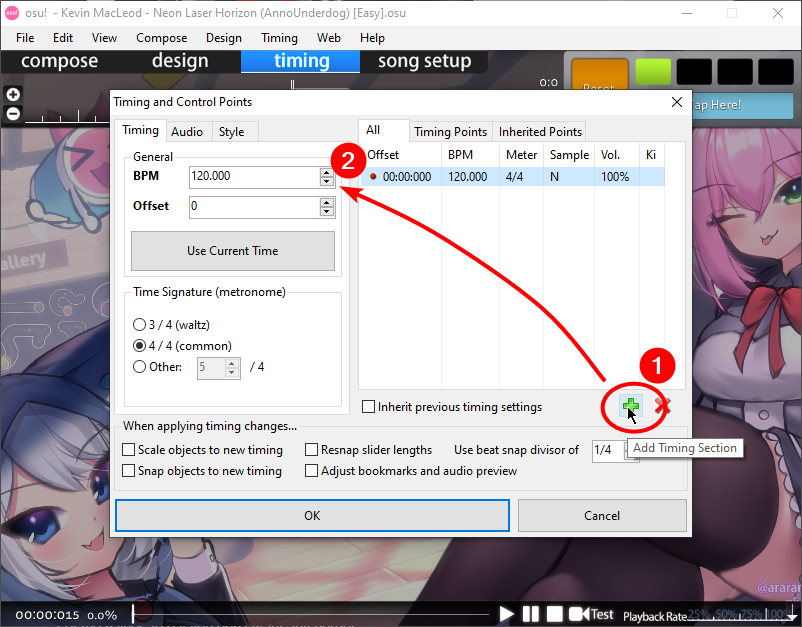
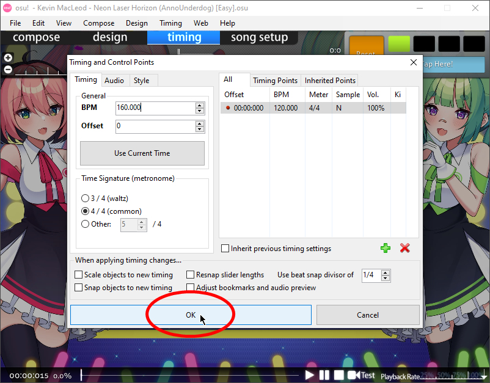
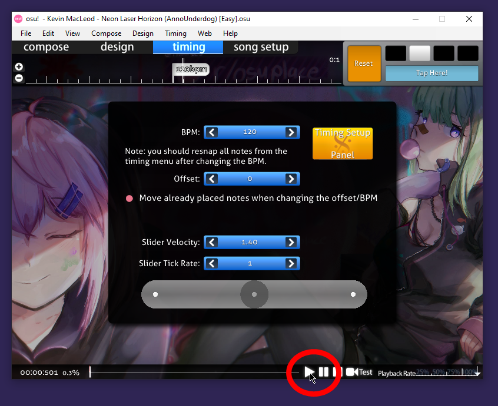
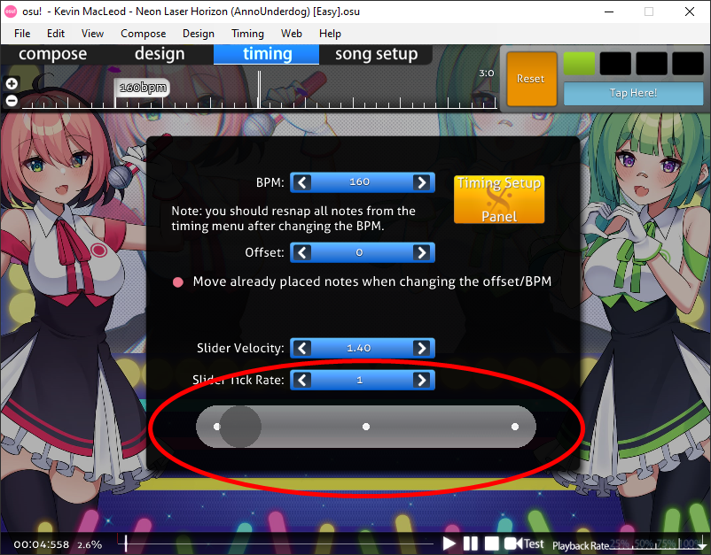
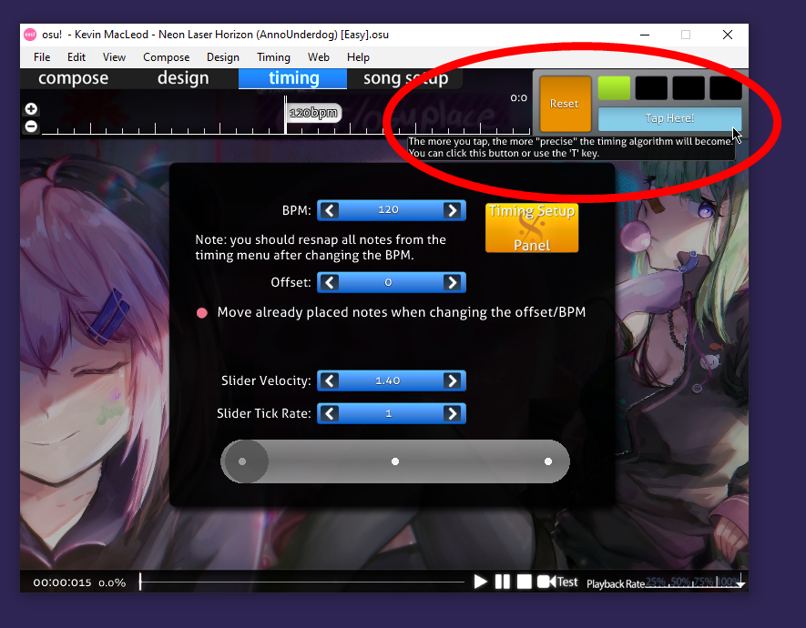

Setting the BPM
After clicking OK on that Song Setup window, you’ll be in the timing tab. You’re meant to figure out and assign the proper BPM for the song because the timing of all Hit Objects rely on this.
Caution
If you set the BPM wrong, then the time when Hit Objects come out will feel off, no matter how much you position them in the timeline. Setting the BPM right the first time around will save you a lot of headache.
Click on the yellow button labeled Timing Setup Panel:

Before you can set the BPM, you need to add the song’s first Timing Section. Then you can input the BPM in the textfield.
Note
You need to know the song’s BPM. If not, you will have to figure it out by ear.

Tip
In case the song changes BPM or Time Signature at some point, you can add more Timing Sections, assign the time in the song when they happen, and set the corresponding BPM and/or Time Signature for each.
Now click on the OK button to close this Timing and Control Points window. You can always re-open this window by pressing F6 on the keyboard:

If you’re trying to figure out the BPM, you can click on the ▶ and ⏸ buttons at the lower right area (or press spacebar) to toggle play/pause, and check if your guess is correct:

There is a digital metronome that will tick at the BPM you’ve assigned, you can both look at and listen to it to check if you got it right:

You can also continually click on the Tap Here! button at the upper-right area (or press T on the keyboard) according to the beat, while listening to the music, to derive the BPM:
